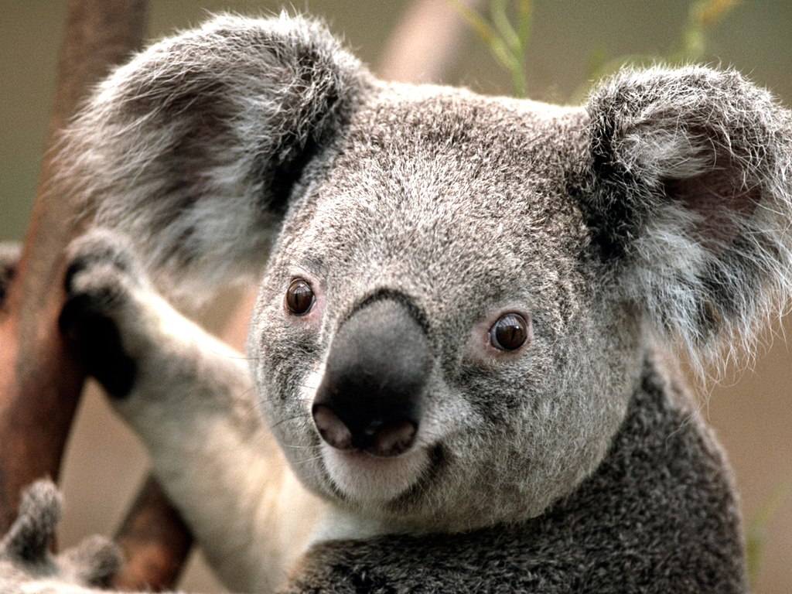

KOALA
The koala (Phascolarctos cinereus) is an arboreal herbivorous marsupial native to Australia. It is the only extant representative of the family Phascolarctidae and its closest living relatives are the wombats. The koala is easily recognisable by its stout, tailless body and large head with round, fluffy ears.
Koalas typically inhabit open eucalypt woodlands, and the leaves of these trees make up most of their diet. Because this eucalypt diet has limited nutritional and caloric content, koalas are largely sedentary and sleep up to twenty hours a day.
They are asocial animals, and bonding exists only between mothers and dependent offspring.
WHERE WILL YOU FIND THEM?
You will find the koalas next to the giraffe enclosure.